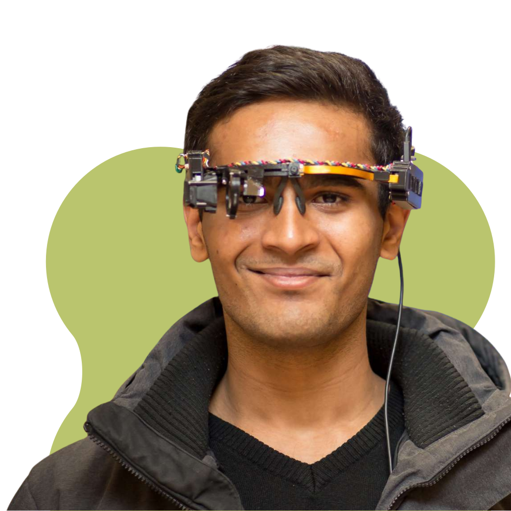
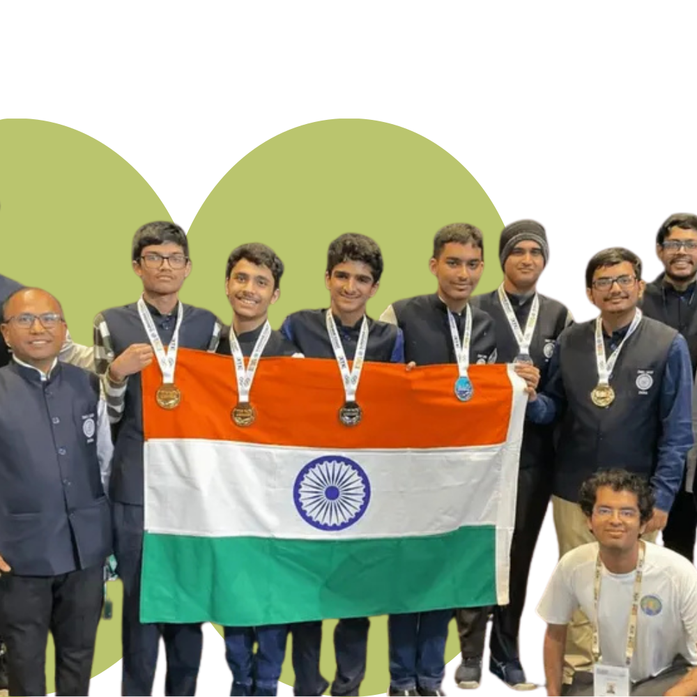
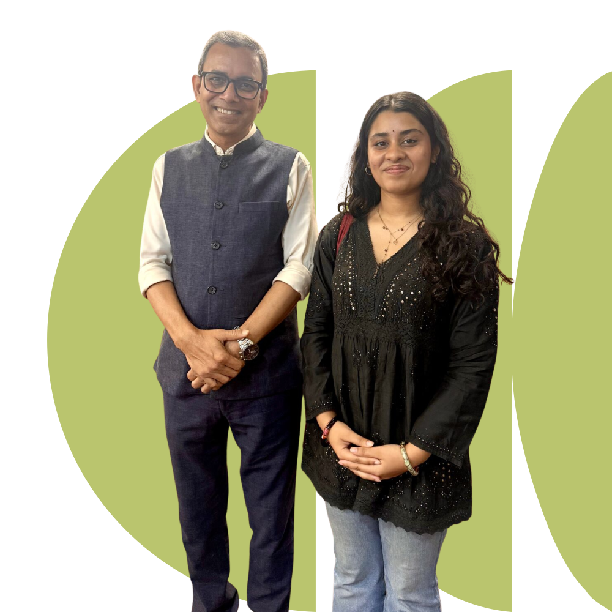

Develop the student
We begin with natural strengths, intellectual appetite, and the kind of guidance that helps a student become more serious over time.
The Blue Ocean Method
Seven interdependent disciplines built around each student's genuine strengths.
The core belief
Most admissions companies start with the application. Blue Ocean starts with the student. When students are developed to the height of their potential, admissions follow.
We begin with natural strengths, intellectual appetite, and the kind of guidance that helps a student become more serious over time.
Academic projects, competitions, community work, and communication training become proof of depth rather than resume decoration.
Only then do we shape university strategy, positioning, essays, recommendations, interviews, and the final admissions architecture.
Blue Ocean Profile Architecture
01 / Academic Project Development
We help students develop serious academic projects — work that reflects genuine curiosity, depth, and initiative. Not a school assignment. Not a resume filler. Something original that stands as primary evidence of who they are intellectually.
02 / Competition Strategy
We identify competitions, fellowships, and prizes in your child's domain where results move admissions committees. Then we build a preparation strategy so the outcome becomes a meaningful part of the application story.
03 / Community Impact
Generic volunteering does not move selective admissions committees. We help students design genuine community initiatives that are meaningful, sustainable, and capable of growing beyond their time in school. Work that reflects character, not just participation.
04 / Unique Skill Development
Every student has a natural strength that most programs never develop properly. We identify what makes each student genuinely different — in performance, domain expertise, original thinking, or craft — and help them reach a level that is hard to ignore.
05 / Language and Argumentation
The clearest signal of intellectual maturity is how someone reasons through a problem and defends a position. We train students to think, speak, and write with clarity — strengthening their essays, interviews, and academic work from the ground up.
06 / Admissions Strategy
Blue Ocean students do not apply and hope. We build a targeted university list, a clearly argued positioning, and an application architecture that connects every part of the student's profile to a coherent story across the US, UK, Singapore, and beyond.
07 / Ongoing Mentorship
Every student works directly with Dr. Sanjay Kumar and a team of mentors from Harvard, MIT, and the world's top universities. Weekly sessions drive progress. Monthly strategy meetings with Dr. Sanjay keep the full profile architecture sharp.
01 / Academic Project Development
We help students develop serious academic projects — work that reflects genuine curiosity, depth, and initiative. Not a school assignment. Not a resume filler. Something original that stands as primary evidence of who they are intellectually.

02 / Competition Strategy
We identify competitions, fellowships, and prizes in your child's domain where results move admissions committees. Then we build a preparation strategy so the outcome becomes a meaningful part of the application story.

03 / Community Impact
Generic volunteering does not move selective admissions committees. We help students design genuine community initiatives that are meaningful, sustainable, and capable of growing beyond their time in school. Work that reflects character, not just participation.

04 / Unique Skill Development
Every student has a natural strength that most programs never develop properly. We identify what makes each student genuinely different — in performance, domain expertise, original thinking, or craft — and help them reach a level that is hard to ignore.

05 / Language and Argumentation
The clearest signal of intellectual maturity is how someone reasons through a problem and defends a position. We train students to think, speak, and write with clarity — strengthening their essays, interviews, and academic work from the ground up.

06 / Admissions Strategy
Blue Ocean students do not apply and hope. We build a targeted university list, a clearly argued positioning, and an application architecture that connects every part of the student's profile to a coherent story across the US, UK, Singapore, and beyond.

07 / Ongoing Mentorship
Every student works directly with Dr. Sanjay Kumar and a team of mentors from Harvard, MIT, and the world's top universities. Weekly sessions drive progress. Monthly strategy meetings with Dr. Sanjay keep the full profile architecture sharp.

Work with us
We take on a small number of students each year. If you'd like to find out whether we're the right fit, reach out and we'll set up a conversation.